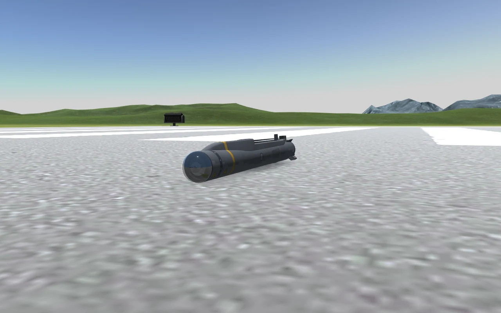
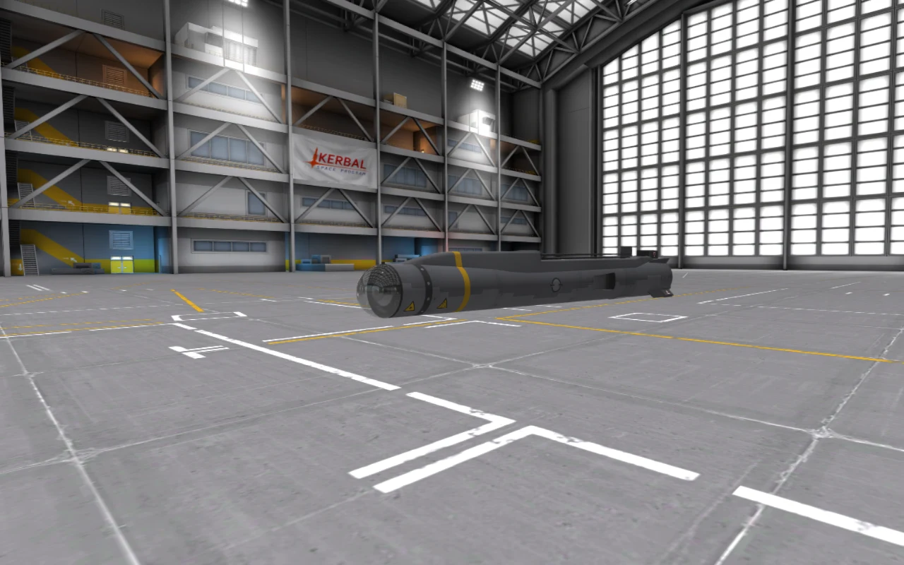

ShineFix home
← Back to supported mods
Kerbal Powers Armory
Optics verified
Human tested
Version v1.2.3
Compatibility evidence
Original screenshot gallery
Parts
GBU-30 "Sulfur" Small Diameter Glide Bomb

KP41 "Axe" IFV Turret
SRA-132 "Comet" Missile
SRS-30 "Sulfur" Small Diameter Cruise Missile
